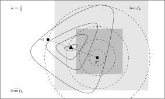

Proximal Algorithms in Federated Learning#
In non-I.I.D. scenarios, based on the idea of reducing the impact of local updates of clients on the global model,
[Li et al.[1]] first introduced a proximal term to the local objective functions, aiming at making the
algorithm more stable and converging faster. Compared to SCAFFOLD, methods using proximal terms do not need to
maintain extra parameters (mainly related to the gradients), hence having no communication overhead and no
additional cost to security (refer to [Zhu et al.[2]] for more details).
To be more specific, in the \((t+1)\)-th iteration, the local objective function of client \(k\) changes from \(f_k(\theta_k)\) to the following form with a proximal term:
where \(\mu\) is a penalty constant. It should be noticed that the proximal center \(\theta^{(t)}\) is the model parameter on the server node obtained in the previous iteration (the \(t\)-th iteration). Indeed, the overall optimization problem can be modeled as the following constrained optimization problem
For alternatives for the proximal center, studies were conducted in [Hanzely and Richtárik[3], Li et al.[4]] which would be
introduced later. Now, we summarize the pseudocode for FedProx as follows:

We denote the \(\gamma\)-inexact solution \(\theta_k^{(t)}\) as
where \(\prox_{f_k, \mu}\) is the proximal operator [Moreau[5]] of \(f_k\) with respect to \(\mu\). Let \(s = \frac{1}{\mu}\), since one has \(\prox_{f_k, \mu} = \prox_{sf_k, 1}\), we also denote \(\prox_{f_k, \mu}\) as \(\prox_{sf_k}\). Corresponding function
is called Moreau envelope or Moreau-Yosida regularization of \(f_k\) with respect to \(\mu\). Moreau envelope of a function \(f_k\) has the following relationship [Parikh and Boyd[6]] with its proximal operator:
Namely, \(\prox_{sf_k}\) can be regarded as the gradient descent operator for minimizing \(\mathcal{M}_{sf_k}\) with step size \(s\).
For the convergence of FedProx in non-I.I.D. scenarios, [Li et al.[1]] has the following theorem:
Assume that the objective functions on clients \(\{f_k\}_{k=1}^K\) are non-convex, \(L\)-smooth (definition see (3)), and there exists a constant \(L_- > 0\) such that \(\nabla^2 f_k \succcurlyeq -L_- I_d\). Assume further that the functions \(\{f_k\}_{k=1}^K\) satisfy the so-called bounded dissimilarity condition, i.e. for any \(\varepsilon > 0\), there exists a constant \(B_{\varepsilon} > 0\) such that for any point \(\theta\) in the set \(\mathcal{S}_{\varepsilon}^c := \{ \theta ~|~ \lVert \nabla f(\theta) \rVert^2 > \varepsilon\}\), the following inequality holds
Fix constants \(\mu, \gamma\) satisfying
where \(\bar{\mu} = \mu - L_- > 0\). Then, in the \((t+1)\)-th iteration of FedProx, assuming that the global model
\(\theta^{(t)}\) of the previous iteration is not the first-order stationary point of the global objective function \(f(\theta)\),
(i.e. \(\theta^{(t)} \in \mathcal{S}_{\varepsilon}^c\)), the following decrease in the global objective function holds
For the convergence theorem of FedProx, we have the following observations: in a neighbourhood of
some zero of \(\lVert \nabla f \rVert\), if this zero is not cancelled by \(\mathbb{E}_k[\lVert \nabla f_k \rVert]\),
i.e. this point is also a zero of \(\mathbb{E}_k[\lVert \nabla f_k \rVert]\) with the same or higher multiplicity,
then in the neighbourhood, \(B_{\varepsilon}\) goes rapidly to infinity as \(\varepsilon \to 0\), thus violating
the condition \(\rho > 0\). In this case, the inequality (8) becomes meaningless.
When the data distribution across clients is identical (ideal case), then \(B_{\varepsilon}\) is constantly equal to 1, which would not have the problem mentioned above. This problem is the start point of a series of follow-up works [Pathak and Wainwright[7], Tran-Dinh et al.[8]].
The positive significance of the FedProx algorithm is that it first introduced the proximal point algorithms (PPA) in the field of
federated learning, although which were only used for solving local optimization problems (or equivalently the inner loop problem) and the
whole of the FedProx algorithm is not a PPA in strict sense. The FedProx algorithm provides not only a good framework for theoretical
analysis, but also a good starting point for the design of new algorithms. A large proportion of the algorithms proposed later for personalized
fedrated learning [Hanzely and Richtárik[3], Acar et al.[9], Li et al.[4], Dinh et al.[10], Li et al.[11]] rely on the proximal terms (or similar terms)
as the main technical tool for personalization.

Schematic diagram for \(f_k(\alpha_k \omega_k + (1 - \alpha_k) \theta^*)\) in the APFL algorithm.
Client model parameter update schematic diagram of the FedDyn algorithm.
to write more….
References